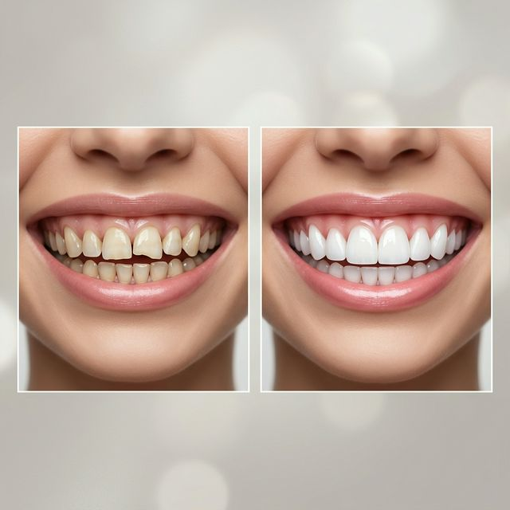
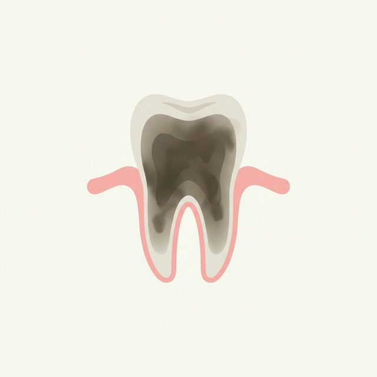
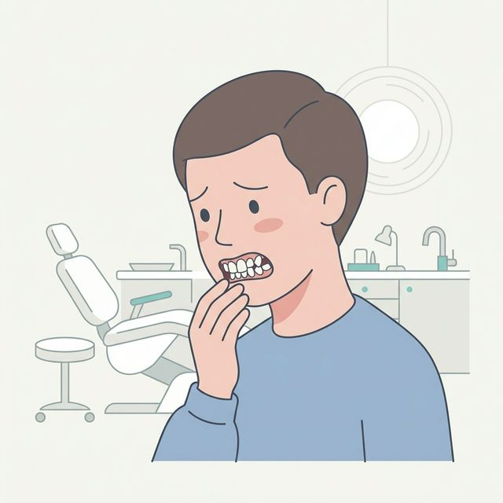
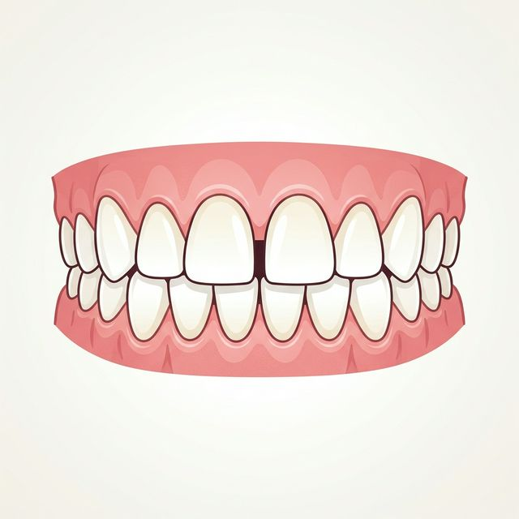
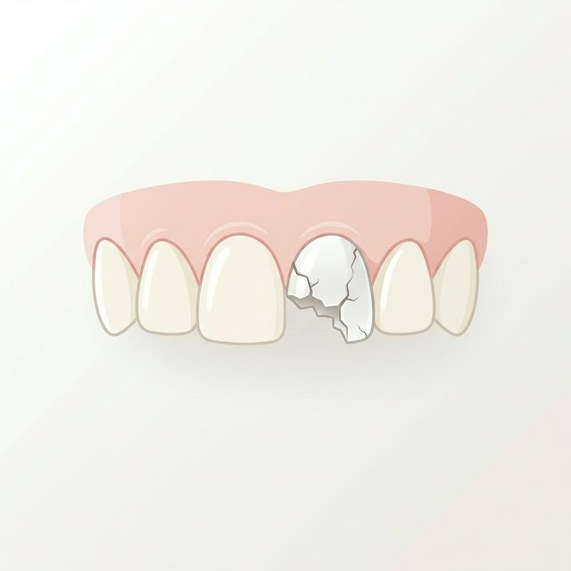
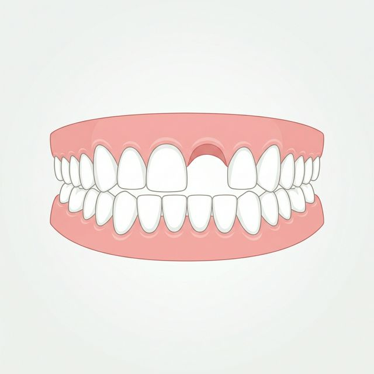
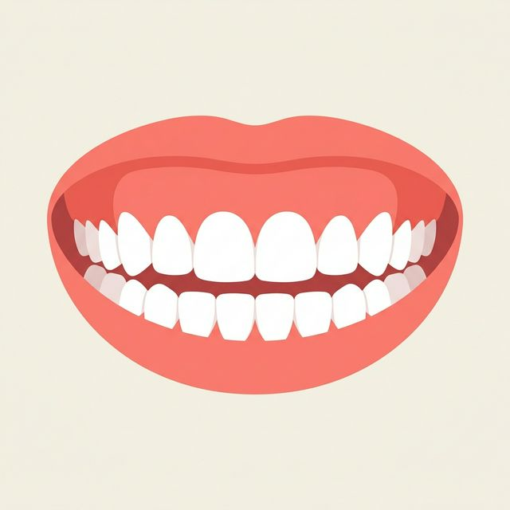
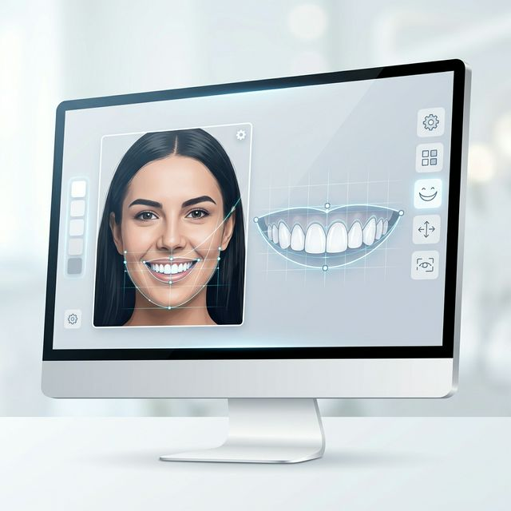
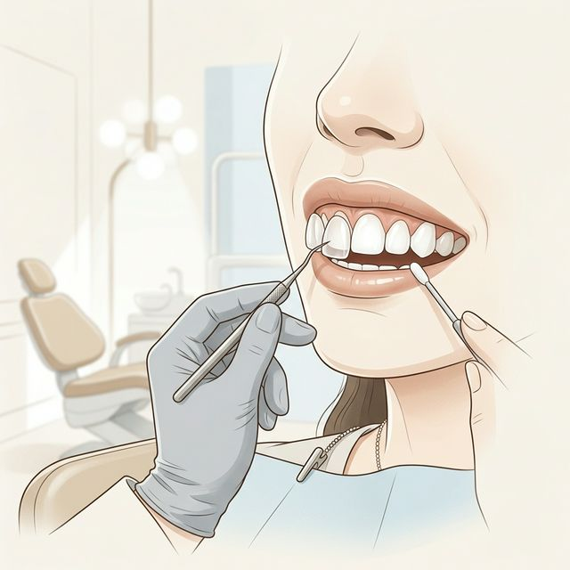

Smile Makeover
A bespoke combination of treatments, artistically crafted to transform your smile and elevate your confidence — designed entirely around you.

What Is a Smile Makeover?
A smile makeover is a fully personalised cosmetic treatment plan that combines two or more procedures to transform the look of your smile. Rather than a single fix, it is a comprehensive, coordinated approach — where every element works together to create a result that is beautiful, balanced, and uniquely yours.
Your makeover may include teeth whitening, porcelain veneers, dental bonding, implants, gum contouring, or orthodontic treatment — selected and sequenced strategically by our clinicians to achieve maximum impact.
Common Reasons for a Smile Makeover






How Your Makeover Comes Together

1 Smile Design Consultation
We start with an in-depth consultation and digital smile analysis. Using photographs and digital design tools, we preview what your new smile will look like before any treatment begins — ensuring you are fully involved in the creative process and completely satisfied with the direction.

2 Personalised Treatment Plan
Based on your goals, oral health status, and digital smile design, we curate a step-by-step treatment sequence. This specifies which procedures will be done, in what order, and the expected timeline — eliminating surprises and keeping you in control throughout.
3 Treatment & Transformation
Each procedure is carried out with precision and artistry. Whether it is whitening first, then veneers, or implants followed by orthodontics — every step builds toward your final result. We work at a pace that is comfortable for you, with regular check-ins to assess progress.
4 The Reveal & Maintenance
When all treatments are complete, we conduct a final assessment and reveal the finished smile. You leave with a personalised maintenance plan that ensures your investment looks as stunning years from now as it does on day one.
Maintaining Your New Smile
Post-makeover care protects your investment and keeps your results looking exceptional for years to come.
- Excellent oral hygiene: Brush twice daily with fluoride toothpaste and floss every day. Consistent home care is the single most important factor in the longevity of your results.
- Avoid staining foods & drinks: Limit coffee, tea, red wine, and other highly pigmented foods and beverages to maintain the brightness of any whitening or veneer work.
- Wear a sports mouthguard: Protect your new restorations from impact during any physical or contact sport activity.
- Attend regular check-ups: Routine dental visits allow us to monitor the condition of all restorations, catch issues early, and professionally clean areas that are hard to reach at home.
- Consider periodic touch-ups: Some elements of the makeover — such as teeth whitening — may benefit from a maintenance session every 12–18 months to keep results fresh.
- Report any concerns promptly: If you experience any sensitivity, discomfort, or notice a change in how your bite feels, contact us right away for an early assessment.
Frequently Asked Questions
The timeline depends on which treatments are included. A simple makeover involving whitening and bonding can be completed in a few weeks. More comprehensive plans involving implants or orthodontics may take 6–18 months. We outline a clear timeline at your planning consultation.
Each individual treatment within the makeover is carried out with appropriate anesthesia and care to ensure your comfort. Some procedures may cause mild post-treatment sensitivity, which is temporary. We will guide you through what to expect at each stage.
This is decided collaboratively during your smile consultation. We assess your oral health, discuss your aesthetic goals, use digital smile design to preview options, and then recommend the most appropriate combination of treatments — prioritising what will deliver the most meaningful improvement for you.
With proper care, most makeover components last many years. Porcelain veneers and crowns typically last 10–15 years; tooth bonding 5–7 years; implants can last a lifetime. Consistent oral hygiene and regular dental check-ups are the key to maximising longevity.
Absolutely. We use Digital Smile Design to create a visual preview of your proposed new smile before any treatment begins. This ensures you are fully aligned with the outcome, and allows us to make refinements to design until it is exactly right for you.
Begin Your Transformation
Your dream smile is closer than you think. Book a smile design consultation and let us show you what is possible.
Book a Smile Consultation